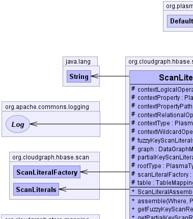
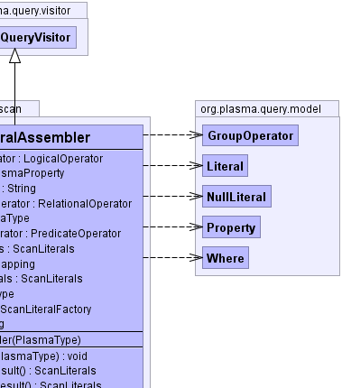
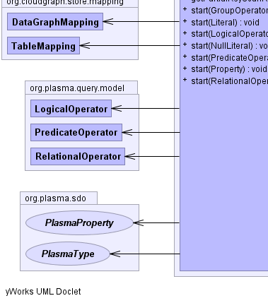
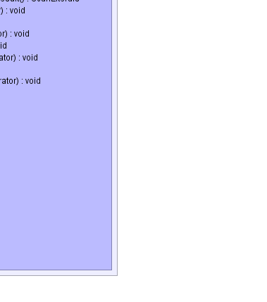

public class ScanLiteralAssembler
extends org.plasma.query.visitor.DefaultQueryVisitor
DataGraphMapping,
TableMapping|  |  |
|  |  |
| Modifier and Type | Field and Description |
|---|---|
protected org.plasma.query.model.LogicalOperator |
contextLogicalOperator |
protected org.plasma.sdo.PlasmaProperty |
contextProperty |
protected java.lang.String |
contextPropertyPath |
protected org.plasma.query.model.RelationalOperator |
contextRelationalOperator |
protected org.plasma.sdo.PlasmaType |
contextType |
protected org.plasma.query.model.PredicateOperator |
contextWildcardOperator |
protected ScanLiterals |
fuzzyKeyScanLiterals |
protected DataGraphMapping |
graph |
protected ScanLiterals |
partialKeyScanLiterals |
protected org.plasma.sdo.PlasmaType |
rootType |
protected ScanLiteralFactory |
scanLiteralFactory |
protected TableMapping |
table |
| Constructor and Description |
|---|
ScanLiteralAssembler(org.plasma.sdo.PlasmaType rootType) |
| Modifier and Type | Method and Description |
|---|---|
void |
assemble(org.plasma.query.model.Where where,
org.plasma.sdo.PlasmaType contextType)
Assemble the set of data "flavor" and data type specific scan literals used
to construct composite partial row (start/stop) key pair.
|
ScanLiterals |
getFuzzyKeyScanResult() |
ScanLiterals |
getPartialKeyScanResult() |
void |
start(org.plasma.query.model.GroupOperator operator) |
void |
start(org.plasma.query.model.Literal literal)
Process the traversal start event for a query
literal within an
expression. |
void |
start(org.plasma.query.model.LogicalOperator operator)
Process a
logical operator
query traversal start event. |
void |
start(org.plasma.query.model.NullLiteral nullLiteral)
(non-Javadoc)
|
void |
start(org.plasma.query.model.PredicateOperator operator) |
void |
start(org.plasma.query.model.Property property)
Process the traversal start event for a query
property within an
expression just traversing the
property path if exists and capturing context information for the current
expression. |
void |
start(org.plasma.query.model.RelationalOperator operator) |
end, end, end, end, end, end, end, end, end, end, end, end, end, end, end, end, end, end, end, end, end, end, end, end, getContext, start, start, start, start, start, start, start, start, start, start, start, start, start, start, start, start, startprotected org.plasma.sdo.PlasmaType rootType
protected org.plasma.sdo.PlasmaType contextType
protected org.plasma.sdo.PlasmaProperty contextProperty
protected java.lang.String contextPropertyPath
protected org.plasma.query.model.RelationalOperator contextRelationalOperator
protected org.plasma.query.model.LogicalOperator contextLogicalOperator
protected org.plasma.query.model.PredicateOperator contextWildcardOperator
protected DataGraphMapping graph
protected TableMapping table
protected ScanLiterals partialKeyScanLiterals
protected ScanLiterals fuzzyKeyScanLiterals
protected ScanLiteralFactory scanLiteralFactory
public ScanLiteralAssembler(org.plasma.sdo.PlasmaType rootType)
public ScanLiterals getPartialKeyScanResult()
public ScanLiterals getFuzzyKeyScanResult()
public void assemble(org.plasma.query.model.Where where,
org.plasma.sdo.PlasmaType contextType)
where - the row predicate hierarchycontextType - the context type which may be the root type or another type linked
by one or more relations to the rootpublic void start(org.plasma.query.model.Property property)
property within an
expression just traversing the
property path if exists and capturing context information for the current
expression.start in interface org.plasma.query.visitor.QueryVisitorstart in class org.plasma.query.visitor.DefaultQueryVisitorDefaultQueryVisitor.start(org.plasma.query.model.Property)public void start(org.plasma.query.model.Literal literal)
literal within an
expression.start in interface org.plasma.query.visitor.QueryVisitorstart in class org.plasma.query.visitor.DefaultQueryVisitorGraphServiceException - if no user defined row-key token is configured for the current
literal context.literal - the expression literalpublic void start(org.plasma.query.model.NullLiteral nullLiteral)
start in interface org.plasma.query.visitor.QueryVisitorstart in class org.plasma.query.visitor.DefaultQueryVisitorDefaultQueryVisitor.start(org.plasma.query.model.NullLiteral)public void start(org.plasma.query.model.LogicalOperator operator)
logical operator
query traversal start event.start in interface org.plasma.query.visitor.QueryVisitorstart in class org.plasma.query.visitor.DefaultQueryVisitorpublic void start(org.plasma.query.model.PredicateOperator operator)
start in interface org.plasma.query.visitor.QueryVisitorstart in class org.plasma.query.visitor.DefaultQueryVisitorpublic void start(org.plasma.query.model.RelationalOperator operator)
start in interface org.plasma.query.visitor.QueryVisitorstart in class org.plasma.query.visitor.DefaultQueryVisitorpublic void start(org.plasma.query.model.GroupOperator operator)
start in interface org.plasma.query.visitor.QueryVisitorstart in class org.plasma.query.visitor.DefaultQueryVisitorCloudGraph® is a registered trademark of TerraMeta Software, Inc. Copyright © 2014 - All Rights Reserved.